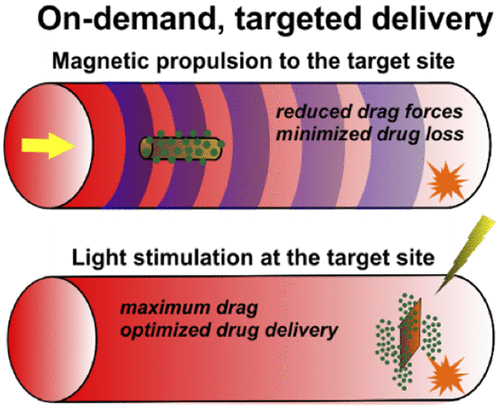
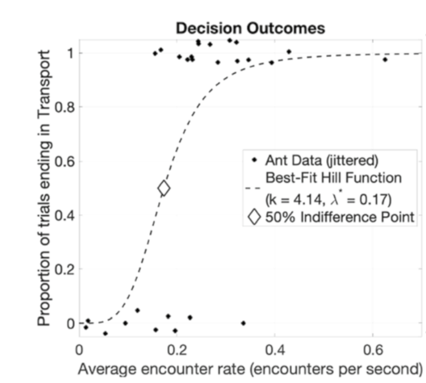
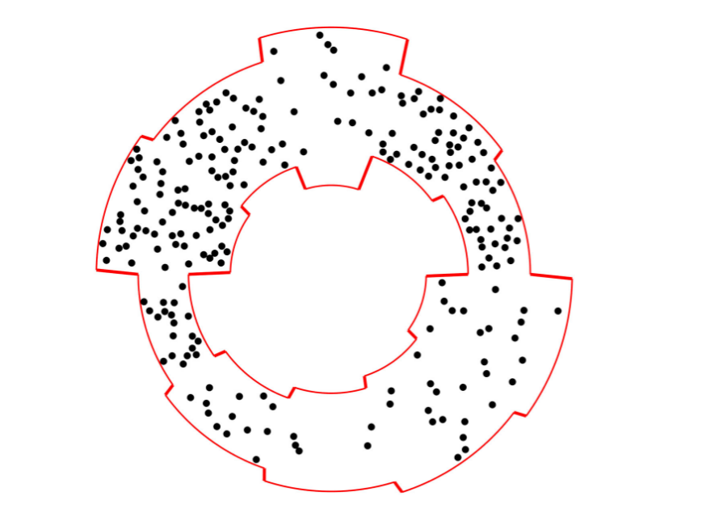
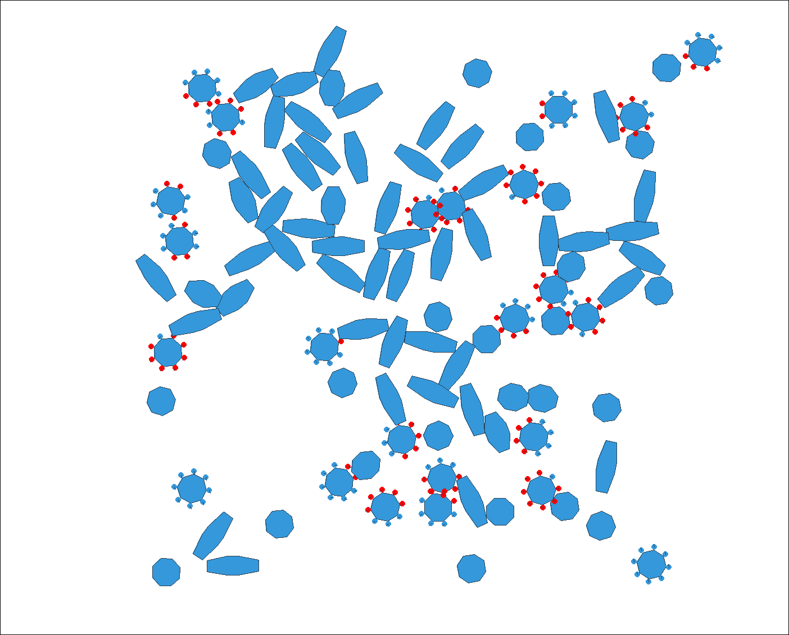
Can we control the proportion of the collective in each shape using local decisionmaking?
What effect does shape have on collective dynamics?
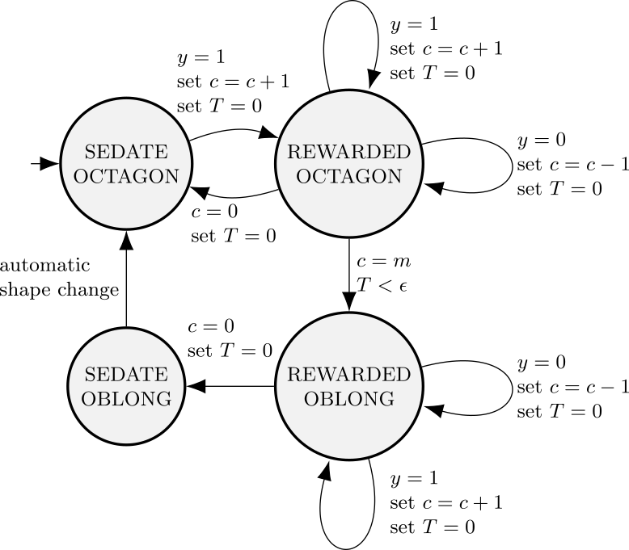
\[\begin{align*} \dot{R} & = S \lambda - R/\tau \\ \dot{S} & = R/\tau - S \lambda \end{align*}\]
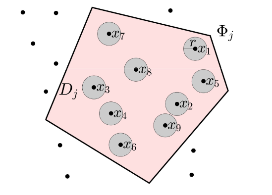
Probability of collisions gives:
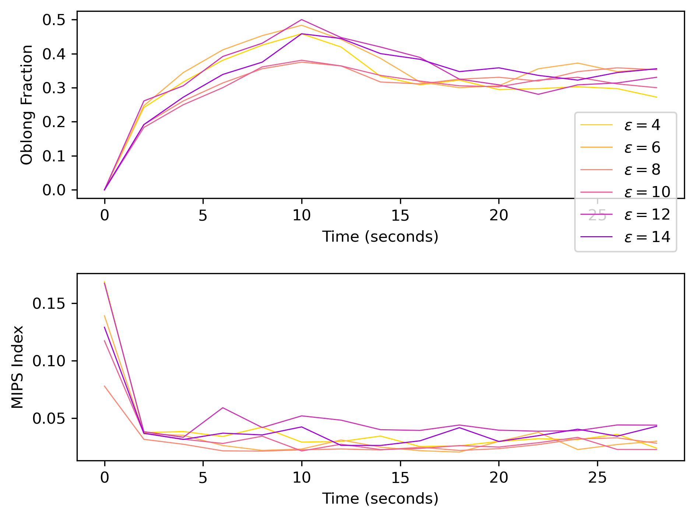
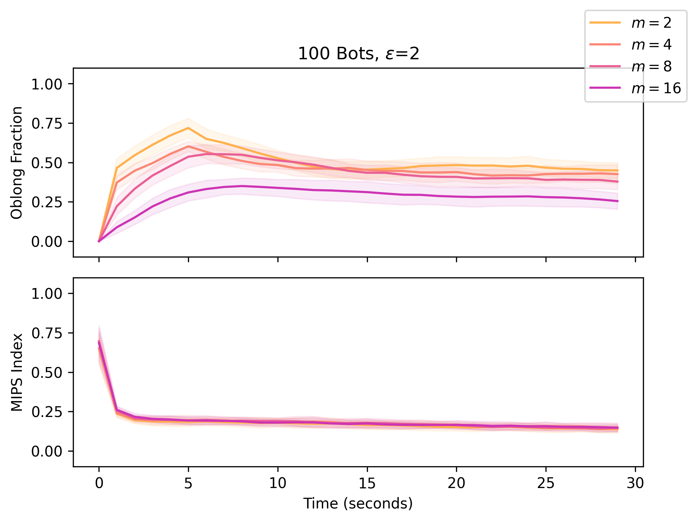
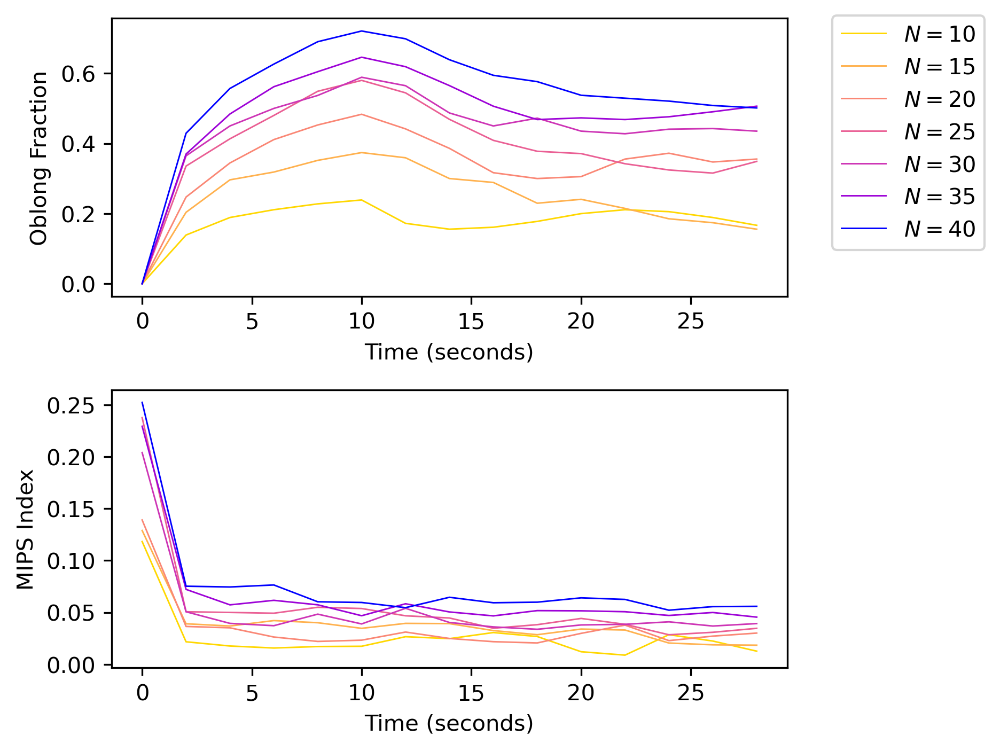
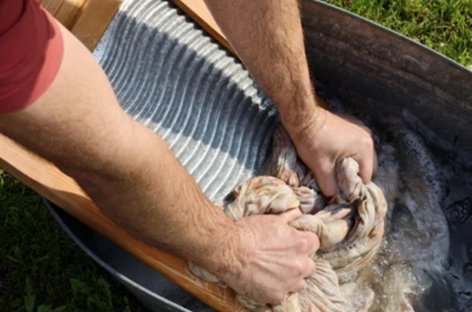
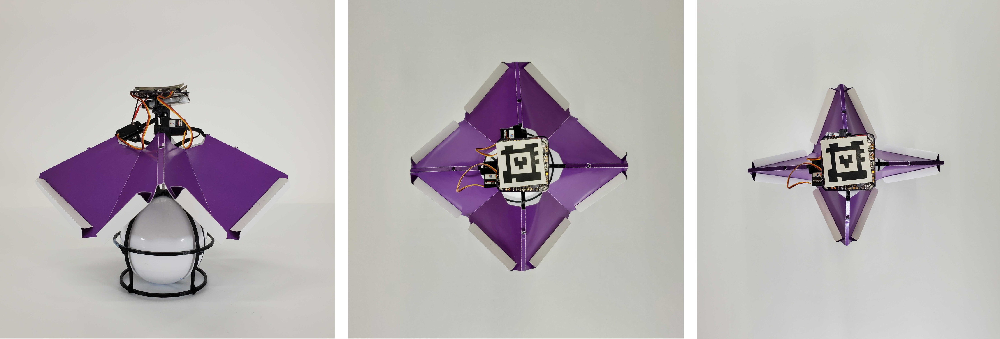
New lab website: https://mrrp.cs.wwu.edu